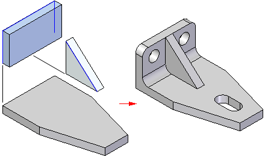
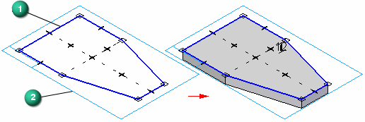
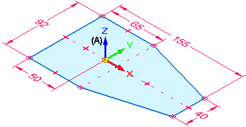

Create a part (workflow)
Getting started
The first feature you create for a part or sheet metal model is called the base feature. Several commands are available for creating base features, but one thing they have in common is that they are sketch-based features. When starting a new model, consider the following questions:
What is the best sketch for the first feature on the part?
See Choosing the best sketch for the base feature.

On which reference plane should it be drawn?
See Choosing the best reference plane.

Are there symmetric features on the part?
Create a part workflow
Use the following process to create a base feature for your part model.

Create a document using the iso part.par template.
To model a machined, cast, molded, or plastic part, use a part document (.par).
To model a sheet metal part, use a sheet metal document (.psm) and the iso sheet metal.psm template.
Sketch the base feature.
You construct a sketch-based feature by drawing a closed sketch region (1) on a reference plane (2).

Start a synchronous sketch by selecting a sketch plane and pressing F3 to lock it.
The first sketch you draw must be a closed sketch region, and it is typically drawn on one of the three principal planes of the base coordinate system (A).

To learn about sketching options, see Drawing sketches of parts.
Use the commands in the Draw group to draw the base feature. For example:
Apply sketch element relationships.
If you drew a shape using disjoint elements such as lines, arcs, or curves, you could use the various relationship commands to apply additional geometric relationships to maintain proper alignment when edits are made.
For example, you can:
Add dimensions to the sketch.
Use the Smart Dimension command to add dimensions to the sketch elements.
Extrude the sketch into a 3D shape.
Select the sketch, and then drag the handle to create an extruded base feature.
Watch this video to learn how to draw, dimension, and extrude a part.
See the help topic, Construct an extrusion: base feature.
Continue building the part by doing any of the following:
Sketch another feature on the base part, and then use the sketch to construct an extrusion or cutout using the Select tool.
Tip:You can press F3 to lock a sketch plane and then use the Sketch View command to change to a flat sketch plane, making it easier to draw new sketch elements on the part.
When you are finished sketching, you can press Ctrl+I to return to the default isometric view.
Finish the part.
(Optional) You can continue with any of these workflows:
To modify a synchronous model, see Modify a model (overview).
To produce a detailed drawing, see Workflow to create a part drawing.
To create a basic sheet metal part, see Create a sheet metal part (workflow).
To create a basic assembly, see Assemble parts (workflow).